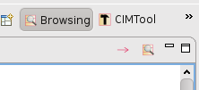

CIMTool provides a special perspective (ie window layout) for browsing the CIM. This is sometimes more convenient than a standard UML editor for browsing, especially if the UML diagrams are not complete.
In particular, CIMTool provides efficient ways to search the CIM and to follow associations through the CIM.
If this is the first time you have used CIMTool you will need to create a project or load an existing project. The easiest way is to follow the instructions here: Exchanging CIMTool Projects.
With a project loaded, open the browsing perspective. From the main menu choose:
Window > Open Perspective > CIMTool > Browsing
The browsing perspective then opens and looks like this:

The Project Explorer (top left) shows the available projects and their contents. For CIM browsing it is only necessary to select the project (as each project has one copy of the CIM). The first time a project is selected its copy of the CIM is analysed in the background. This takes around 10 seconds in typical cases.
The Project Model View (top right) displays the CIM structure and is the centre of activity for browsing. Packages, classes and their members can be explored by expanding the tree view.
For an explanation of CIMTool's interpretation of the CIM and the icons used in this view see: UMLOWL
Selecting an item causes its details to be displayed in the Property View (bottom left) and the Documentation View (bottom right).
The Jump and Search buttons provide addition navigation options. They are located above the project model view:

The Jump button  moves the focus to the opposite end of whatever property or inheritance relationship is currently selected. This is useful for following chains of a associations in the CIM.
moves the focus to the opposite end of whatever property or inheritance relationship is currently selected. This is useful for following chains of a associations in the CIM.
As a shortcut, double-clicking an item in the project model view executes the jump function.
The Search button  opens the search wizard which finds items in the CIM by name, displays them, and allows you to navigate to their definition.
opens the search wizard which finds items in the CIM by name, displays them, and allows you to navigate to their definition.

See Searching Schemas and Profiles for more details about search.